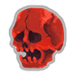
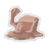
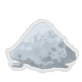
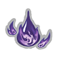
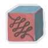
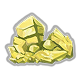
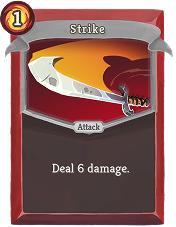
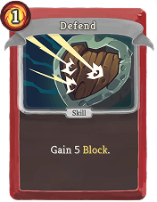
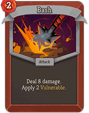

Burning Blood
Heal 6 HP after combat.
A relentless warrior who turns strength, defense, and self-healing into a path to the top of the Spire.
Starting HP: 80
Starting Relic: Burning Blood
Ironclad Collection
Heal 6 HP after combat.

While below 50% HP, gain 3 Strength.
Enemies with Vulnerable take 75% more damage.

When attacked, gain 3 Block next turn.
Applying Vulnerable also applies 1 Weak.

Exhausting a card deals 3 damage to all enemies.
Healing is 50% more effective.

Replaces Burning Blood. Heal 12 HP after combat.
Gain 1 Energy. Add 2 Wounds to your deck.

Whenever you lose HP, draw 1 card.

At the start of each turn, gain 2 Strength. All enemies gain 1 Strength.
The Ironclad begins with 5 Strikes, 4 Defends, and Bash.


